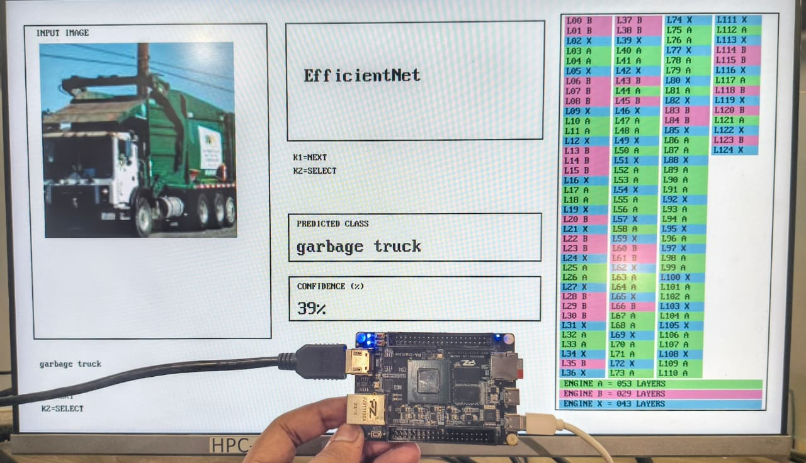
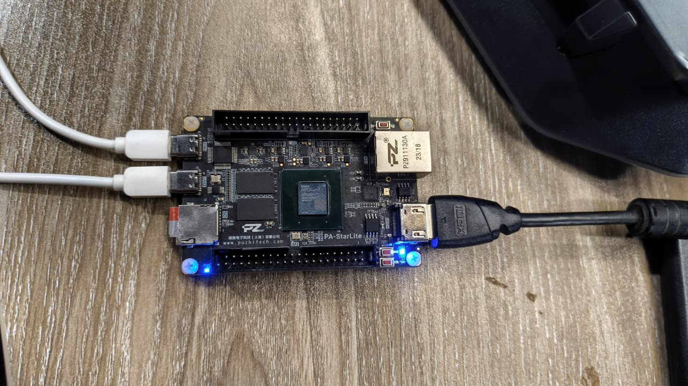
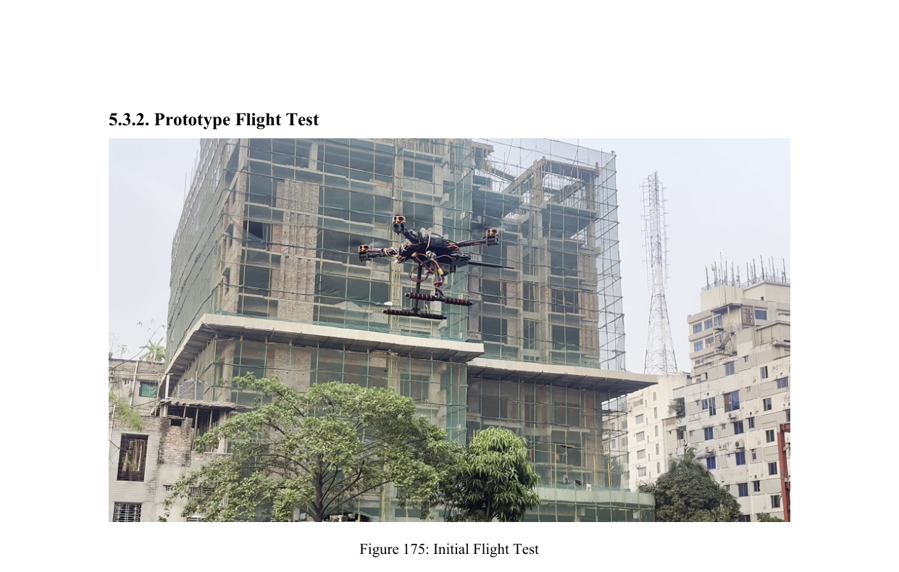
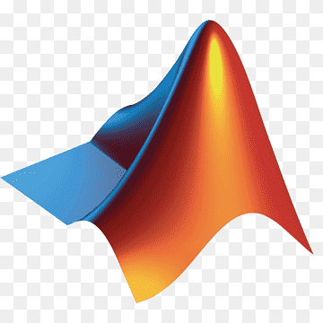

Neuromorphic and Edge AI Hardware, from Transistors to Systems
45 nm ASICs taken through the full tape-out sign-off flow to GDSII, accelerators that run on FPGA, and transistor modeling in TCAD.
About
I am a Research Assistant in the Department of EEE at BRAC University, Dhaka, supervised by Dr. Twisha Titirsha. I completed my B.Sc. in Electrical and Electronic Engineering in the same department in 2026.
A neural network is mostly multiply and add. I work on making that operation cheap in three places:
- In 45 nm layout. Five chip designs taken from RTL through the full tape-out sign-off flow in Cadence (DRC, LVS, SI timing, IR and EM) to GDSII, up to a full SoC with a RISC-V CPU, the accelerator and 4 MB of on-chip SRAM. Academic designs on a generic 45 nm PDK, not fabricated.
- In FPGA logic. MOSAIC runs a 15.2 M-MAC cough-detection network on 9 hardware multipliers, with all 90 KiB of weights in on-chip ROM: 9.73 ms per inference in simulation, 93.08 % accuracy.
- In one transistor. A ferroelectric nanosheet transistor that multiplies three inputs by stored weights and adds them in a single read, with the sum within 0.2 % in TCAD simulation.
My device work is transistor modeling in Silvaco Atlas, in 2D and 3D: gate-all-around nanosheet FETs for sub-5 nm logic, the ferroelectric nanosheet transistor above, and a space-hardened vertical GaN power transistor for spacecraft power converters, simulated under heavy-ion strikes, total dose and temperature (submitted to IEEE EDTM 2027). The ferroelectric and GaN models are calibrated against published measured devices.
I started in aerospace and embedded systems. I led the BD-BRACU Mavericks team on a 3U CubeSat (2nd Runner-Up, APSCO Satellite Expedition Contest 2024), was a payload engineer on the BIRDS-X APRS payload (Phase 1 winner, 2023), and built an autonomous aerial survey drone as my final-year design project. In 2025 I chaired the IEEE Aerospace and Electronic Systems Society branch at BRAC University. I also hold an amateur radio licence, and I completed an industrial attachment at Neural Semiconductor working with the Cadence tools.
I am open to PhD positions in hardware for AI, emerging memory devices and neuromorphic computing.
Education
Roles & Positions
Research Assistant
Leading seven ongoing research projects: MBCFET-FeFET, a ferroelectric nanosheet transistor for multi-bit memory and in-memory computing; a space-hardened vertical GaN power transistor in Silvaco TCAD; SQA ASIC chips, five 45 nm designs signed off in Cadence; MOSAIC, a multimodal edge-AI SoC with a RISC-V host; SQA-Arc, a sensitivity-driven quantization framework and FPGA overlay; the Hybrid Neural Accelerator on the AMD Artix-7; and MBCFET device modeling in Silvaco TCAD.
Previously
2025
Oct 2024
Research & Engineering Domains
Four core research and development focus areas. Click to explore detailed notes and work.
FPGA & Reconfigurable Computing
- Hardware accelerator design on Artix-7: Vitis HLS to bitstream.
- AXI4-based co-design between custom IP and embedded ARM cores.
- Bridging Python-trained models to Verilog hardware for edge inference.
Semiconductor Device Physics
- Beyond-CMOS: GAA FETs and MBCFETs for next-generation logic.
- Device modeling and electrical simulation in Silvaco TCAD (Atlas).
- Short-channel effects and leakage reduction at deep scaling.
VLSI & IC Design
- RTL design, functional verification, and architecture optimisation.
- PPA-driven design-space exploration for arithmetic units.
- Cadence / Vivado / Synopsys flow integration.
Embedded Systems & Robotics
- Locomotion algorithms for planetary rovers and quadrupeds.
- CubeSat avionics, sensor fusion, and real-time data pipelines.
- Microcontroller integration for resource-constrained platforms.
Active Research
Seven open threads: a ferroelectric nanosheet transistor for multi-bit memory and in-memory computing, a space-hardened vertical GaN power transistor, 45 nm ASIC chips signed off in Cadence, a multimodal edge-AI SoC, a quantization framework and FPGA accelerator for edge AI, a hybrid LUT / logarithmic neural accelerator, and a TCAD study of multi-bridge-channel devices for sub-5 nm logic.
MBCFET-FeFET
A ferroelectric nanosheet transistor concept that stores 3 bits and computes a three-input weighted sum inside one transistor (TCAD simulation).
- Eight ordered read levels: 3 bits from one transistor.
- Each bit can be written on its own.
- Multiply and add inside the transistor.
Space-Hardened GaN Transistor
Designing a kilovolt-class vertical GaN transistor that can survive heavy-ion strikes in spacecraft power systems.
- A buried, source-connected p-type shield inside a vertical GaN fin transistor.
- Calibrated device simulation in Silvaco TCAD.
- Heavy-ion, total-dose and temperature stress.
SQA ASIC Chips
Five 45 nm chip designs built around the SQA accelerator, taken from RTL to signed-off layout in Cadence tools (not fabricated).
- Accelerator core, three accelerator chips, a RISC-V controller.
- DRC / LVS clean, 0 timing violators, IR and EM signed off.
- My own SRAM macro models and a Spectre-simulated SRAM column.
MOSAIC
A multimodal edge-AI SoC: a RISC-V host and a ternary / int4 accelerator that detects coughs from audio and motion.
- 9.73 ms per inference on 9 hardware multipliers.
- 93.08% accuracy, bit-exact to the reference model.
- All 90 KiB of weights in on-chip ROM.
SQA-Arc
Sensitivity-driven quantization into ternary and 4-bit engines, built as an FPGA accelerator that runs ten networks from one bitstream.
- Fisher-information sensitivity assigns each layer to a ternary or a 4-bit engine.
- 100 MHz in 15.58% of an Artix-7 XC7A200T; no DSP block computes a weight-activation product.
- EfficientNet-B0 runs on the board with a live HDMI dashboard.
MBCFET Modeling
GAA Multi-Bridge-Channel FET simulation in Silvaco TCAD, targeting sub-5 nm technology nodes.
- Analysis of short-channel effects, DIBL and subthreshold behaviour.
- Nanosheet dimension optimisation to maximise Ion/Ioff ratios.
- Electrostatic design-space sweeps across stack geometries.
Hybrid Neural Accelerator
A reconfigurable LUT / logarithmic compute engine for AI inference, prototyped on the Artix-7 XC7A200T.
- Vitis HLS compute engine optimised for PPA across mixed precisions.
- RTL prototype with timing closure and resource mapping on XC7A200T.
- AXI4-based co-design between custom IP and ARM cores.
Engineered Artifacts
FPGA accelerators, video and ML pipelines, CubeSats, and autonomous platforms, built from concept through hardware integration.
MBCFET-FeFET
A ferroelectric nanosheet transistor concept that stores 3 bits and computes a three-input weighted sum inside one transistor (TCAD simulation).
Space-Hardened GaN Transistor
Designing a kilovolt-class vertical GaN transistor that can survive heavy-ion strikes in spacecraft power systems.

SQA ASIC Chips
Five 45 nm designs (GPDK045) from RTL to signed-off layout in Cadence: an accelerator core, three accelerator chips and a RISC-V controller. Not fabricated.
MOSAIC
Multimodal cough-detection SoC with a RISC-V host and a layer-partitioned ternary / int4 accelerator, bit-exact to its reference model.

SQA-Arc
Fisher-guided ternary and 4-bit quantization, built as SQA-Core: an FPGA overlay that runs ten networks from one bitstream at 100 MHz.
Hybrid Neural Accelerator
Reconfigurable compute engine for AI inference, featuring mode-switching LNS/INT arithmetic prototyped on Artix-7.

MBCFET Modeling
GAA Multi-Bridge-Channel FET simulation in Silvaco TCAD, targeting sub-5 nm technology nodes.

CNN Digit Detector
Full PyTorch-to-FPGA pipeline that trains a 2D CNN on an 8×8 digits dataset, exports fixed-point weights, and displays live recognition over HDMI.

Interactive FPGA Adder
Interactive 4-bit accumulator implemented in Verilog HDL on the PA200T-StarLite board, featuring debounced button control, a custom dynamic I2C LCD driver, and real-time UART logging.

Sobel Video Co-Processor
Real-time 3×3 convolution video filter in Vitis HLS, streaming at II=1 (one pixel per clock) into a flat-Verilog 720p HDMI pipeline, using 0 DSPs and ~1% of the fabric.

Autonomous Aerial Survey
Autonomous drone pipeline combining flight simulation, image processing, and survey automation.
APSCO CubeSat 3U Mission
End-to-end 3U CubeSat with EPS, OBC, comms, ADCS, antenna and ground station developed through 3D, PCB, and orbital simulation.
BIRDS-X APRS Payload
APRS payload focused on energy-transition messaging. Phase 1 winner of the national BIRDS-X space payload competition.
Publications
Tools in Rotation
The working toolchain, spanning from device simulation at the silicon level up through IC design, PCB, and embedded systems.

MATLAB / SimulinkAwards & Achievements
Licences & Certifications
Industrial Training
Let's build something.
Open to research collaborations, PhD opportunities, and IC / hardware roles.